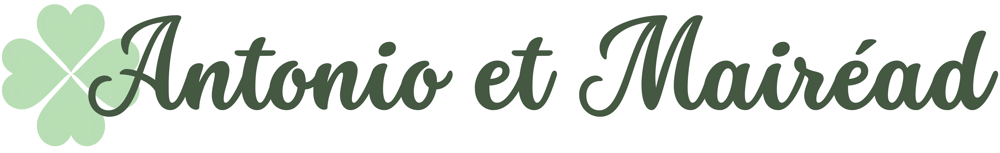

22 mai 2027
16h30 | S'Aspidda | Sardaigne
INFORMATIONS UTILES
TRANSPORT
- Covoiturage pour venir au mariage
- Recommandation itinéraire slow travel :
- Train direct SNCF Rennes - Marseille
- TER ZOU Marseille Toulon
- Nuit sur le bateau de Toulon à Porto Torres
- Vous pouvez faire la traversée en bateau (Corsica Ferries) de Toulon à Porto Torres avec les futurs mariés le vendredi 14 mai
LOGEMENT
- Possibilité de camper gratuitement sur place
- Plusieurs Hotels et Agriturismo sont situés à proximité du lieu du mariage
PHOTOS
- Lien à venir
D’autres informations seront ajoutées sur le site à l’approche des festivités
Contact : casaturmel@proton.me